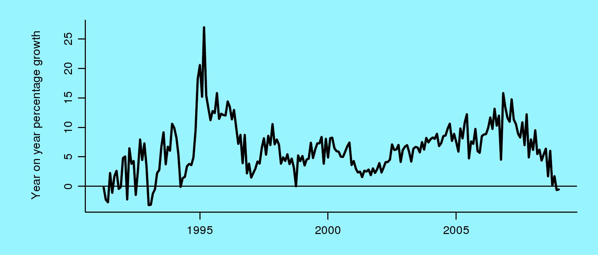
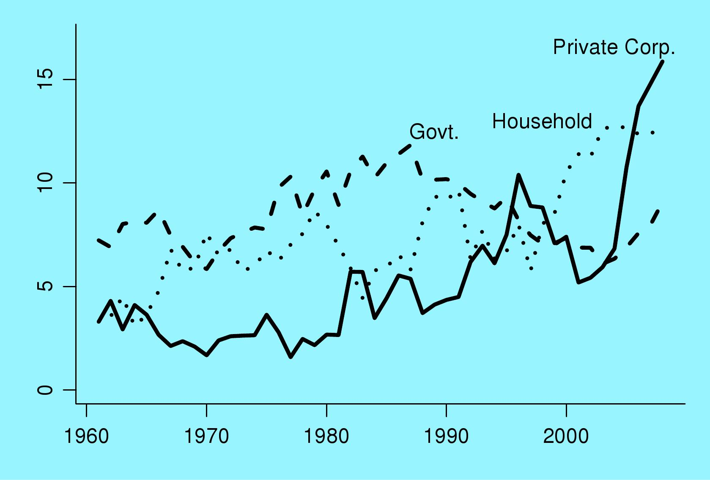
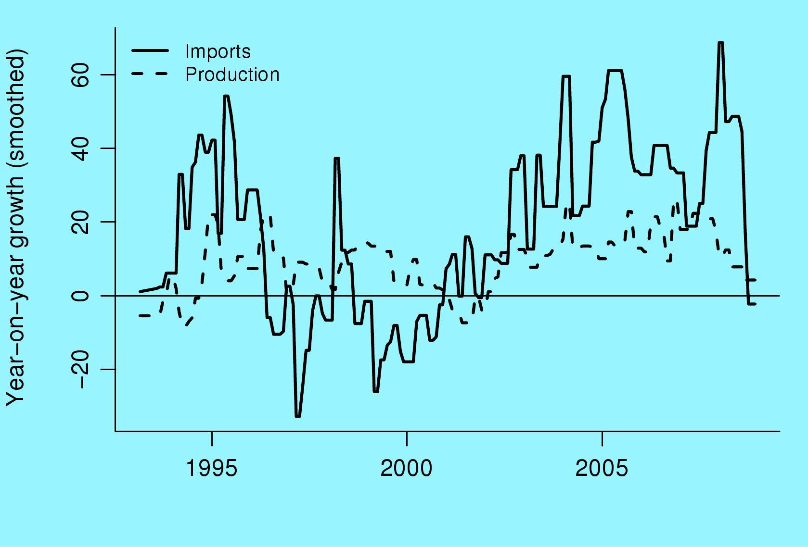
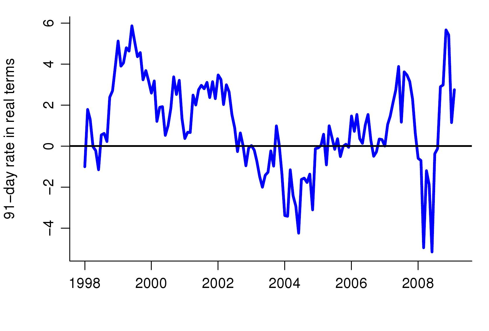
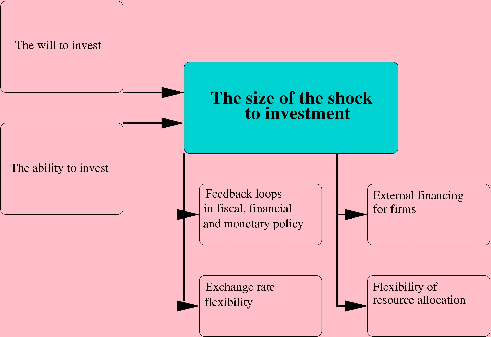

India in the Great Recession
by Ila Patnaik and Ajay Shah
Financial Express, 15 April 2009
I. Conditions are reminiscent of the 1992 and 1999 downturns
While we are all aware that India is in a downturn, the exceptional circumstances that we are now placed in are not widely appreciated. Figure 1 shows the long time-series of year-on-year growth (smoothed) of industrial production. The recent period shows a marked slowdown. Negative values have come about. Industrial production growth seems to be at the worst levels since 1993. What we are facing is exceptional; the last time this happened was 16 years ago.
Other signs of stress are also building up. Capital inflows have dropped from a peak of over $30 billion a quarter to slightly negative values in the Oct-Nov-Dec 2008 quarter. This constitutes a `sudden stop' of capital flows. The fiscal situation has also worsened considerably, with a slowdown in tax collections. The collapse in industrial growth, coupled with the difficulties of public finance, add up to a gloomy environment. The only comparable experiences are found in the business cycle downturns of the early 1990s and the end of the 1990s.
II. The heart of the problem is investment
India is now in new territory on investment. The share of investment in GDP, which used to hover around 25%, has gone all the way up to 40% of GDP. Under normal circumstances, this bodes well, for high investment presages high GDP growth. But there is a problem. Investment, and particularly private corporate investment, is highly unstable in all market economies. Fluctuations of investment are a key source of business cycle fluctuations.
Figure 2 shows the dramatic changes that have taken place in India's investment. The three components of investment -- government, household and private corporate -- are expressed as percent of GDP. We see that for the first time in India's history, in recent years, private corporate investment has exceeded that by the government. Government investment is based on the budgetary process, and does not change much from year to year. Household investment is also relatively stable. Private corporate investment moves around substantially, based on the optimism of the private sector about India's future.
Private corporate investment was at around 5% when Narasimha Rao and Manmohan Singh unleashed the reforms of the early 1990s. This gave a rise in investment to 10%. Then the business cycle downturn came about, and it fell back to 5%. After this, the reforms of the Vajpayee government from 1999 to 2002 were able to reignite confidence, and private corporate investment went back up to 16% of GDP. The numerical values seen in the investment pipeline today are simply enormous. The extent to which it is translated into actual investment spending is of essence to the new logic of Indian business cycle fluctuations.
If the recent upsurge of private corporate investment reverses itself, we could see a drop from 16% of GDP to 6% of GDP. Each percentage point of GDP, today, is Rs.50,000 crore, so we are discussing massive numbers. A ten percentage point decline of private corporate investment is a decline in investment demand of Rs.500,000 crore.
III. We are only analysing possibilities for 2009-11
It must be emphasised that we are discussing a possible scenario for 2009-10 and 2010-11, and not a fact. Figure 2 above shows that private corporate investment has moved around dramatically in response to the changing optimism of the private sector. Optimism has clearly dropped dramatically in recent months. But we do not yet know the extent to which private corporate investment will drop in 2009-10 and 2010-11.
Figure 3 shows recent data for production and imports of capital goods. This data only runs till December 2008. It shows a sharp slowdown in the year-on-year growth of both imports and production of capital goods.
While these early indicators are worrisome, the jury is still out on whether investment in 2009-10 and 2010-11 will slowdown substantially when compared with the previous two years. However, even if this is only a scenario, this is the defining question for India's economic outlook, and the policy debate, when thinking about 2009-10. The critical questions are now: What can policy makers do to reduce the decline in private corporate investment? And, if a substantial drop arises, how can the damage be contained?
IV. Fiscal and monetary policy are mere spectators
Economists generally think in terms of counteracting business cycle fluctuations using fiscal policy and monetary policy. But in India, both fiscal policy and monetary policy institutions are quite feeble. They do not have the capability to make a substantial difference if the challenge that is posed to them is counteracting a decline in private corporate investment of Rs.500,000 crore a year.
In coming years, India must build up high quality fiscal, financial and monetary policy institutions. These institutions will give the institutional capability through which stabilisation can be done. This is a desirable goal, and should be undertaken. Indeed, the job of fiscal, financial and monetary policy reform should be the task number one on the agenda of the next government. But as far as the present downturn is concerned, the damage has been done. The time to fix the roof was when the sun was shining. But India did not make progress in the good years. Now, in the short term, we are faced with a storm, and the institutional capabilities required for stabilisation are absent. If the challenge is a potential decline of investment by Rs.500,000 crore a year, fiscal policy and monetary policy are mere spectators.
V. How can policy makers make a difference?
What shapes private corporate investment? In recent years, there was optimism that India was going to consistently grow at over 8% a year. Once this high growth environment was seemingly in place, the firms were not worried about India's shaky economic policy foundations. The perception of low risk and high expected returns gave an environment where the private sector plunged in to invest.
That scenario has now been disrupted. If the outlook for India is more gloomy, with a growth outlook of 4-6%, then much lower investment will take place. In boom times, all sins were forgiven, but in the present environment, the private sector is asking difficult questions about all aspects of State functioning. Now the private sector is worried about India's shaky institutional foundations on economic policy. The private sector needs to be persuaded that India is serious about economic policy reform, so as to get back to an optimistic environment where India is on the move, growth expectations are strong, and investment gets going again.
The will to invest of the private sector is thus shaped by `animal spirits' of private corporations. Today, the private sector has a low opinion of the interest or willingness of the Indian government to reform itself. The outlook today is one of a moribund India, trapped in ideology, lacking in execution capability, unable to make significant changes in any aspect of government, which will trundle along at 4-6% growth. Is India able to take on holy cows? Does economic policy making have common sense? Are we able to clear-headedly analyse problems, and translate sound analysis into action? Are we able to tread on toes? These are the critical questions.
VI. How to break the gloom?
In order to break with this gloom, the new government must unveil a reforms program in three areas:
- Fiscal, financial and monetary institution building
- Proper financing of the State
- Expenditure reforms on both public goods and on subsidies.
In each of these three areas, a substantial laundry list can be made of what needs to be done. The next budget speech does not need to solve all the problems. It only needs to match Narasimha Rao over 1991 and 1992, and A. B. Vajpayee over 1999-2002, in terms of putting down enough of a down payment in economic reform so as to ignite optimism.
- Fiscal, financial and monetary institution building
- Under institution building are the long-standing problems of reforming law and institutions. This includes problems of RBI's transparency, the merger of all securities markets functions into SEBI (including the commodity futures work that is presently at FMC and the interest rates and currency work that is presently at RBI), the establishment of the Bond-Currency-Derivatives Nexus, and removing entry barriers in banking. With the Patil, Mistry, Rajan and Aziz reports which were done from 2005 to 2008, the technical work of planning out the reforms is in place. What is needed now is execution.
- Proper financing of the State
- What is now needed is new fiscal responsibility legislation, the establishment of a Debt Management Office, the implementation of the Goods and Services Tax, the removal of `bad taxes' including all cesses, all taxes on turnover such as stamp duty and the securities transaction tax, and barriers to globalisation such as customs duty. Given the immense escalation of public debt, government needs to obtain fiscal space through debt reduction by asset sales. Even if there is only a symbolic gesture of selling off 10 loss-making PSUs, it will have considerable signalling value, for it will show an India that is not trapped in ideology, that is able to pragmatically analyse problems and solve them.
- Expenditure reforms on both public goods and on subsidies.
- In terms of expenditure, the first challenge is that of refocusing the government to effectively deliver public goods. This involves setting up a proper police force and judiciary, a fundamental transformation of urban governance, a break with the holy cows on higher education, and genuine execution capabilities for critical infrastructure projects such as NHAI, the Bombay-Delhi industrial corridor, 3G telephony, broadband, and urban metro systems. In the areas of education and health, fundamental change is required to reorient government from spending money to obtaining outcomes. The NREG is an important step forward in delivering cash to poor people. Once cash has been sent to every BPL family in India, the hundreds of distortions and subsidy programs that have been setup in the name of helping poor people can be disbanded. As an example, the LPG subsidy has nothing to do with helping poor people, and only serves to hold back GDP growth. Replacing the food, fertiliser and petroleum product subsidies by a cash transfer to BPL households will make a big difference in derisking the exchequer.
Movement on these three fronts -- institution building, financing of the State, and sensible expenditure -- will ignite animal spirits. The private sector will once again see that India has a chance of obtaining and sustaining above 8% growth. Once this is in hand, a series of bottlenecks which reduce the ability to invest will matter. These include restrictions on FDI, capital controls which prevent capital from coming into India, problems of the land market, and labour law. The new government needs to attack these bottlenecks also.
VII. What if a large decline in investment does come about?
While the new government must do all it can to reignite the `animal spirits' of private investors, we must not assume that this will work out successfully. We must simultaneously ask ourselves the question: If despite our best efforts, a large drop in investment does come about, how can we absorb the shock better? What can be done to minimise the damage, and bounce back effectively when the storm passes? There are four areas for work:
- The first is about positive feedback loops. Faulty policy structures have positive feedback loops. In India, when times are good, interest rates tend to go down in real terms. When times are bad, interest rates tend to go up in real terms. Figure 4 shows the policy rate of RBI, expressed in real terms [methodology] The graph shows big values of the real rate in the dark days of 1999 and in recent months. It shows small values in the boom times of 2004 and 2008. Through this, monetary policy makes good times better and bad times worse. Such sources of pro-cyclicality need to be identified and blocked.
- Institution building in fiscal, financial and monetary policy will enable stabilisation. But this can only yield results in the medium term. In the short term, the only tool for stabilisation that is easily accessed is a floating exchange rate. In good times, the rupee should appreciate and in bad times the rupee should depreciate. This will be a potent force in favour of stabilisation. Many people in India believe that RBI helps matters by reducing the volatility of the rupee-dollar exchange rate. However, such efforts exacerbate the boom and bust cycle of the market economy.
- The third key area for work lies in finance. When bad times arrive, many companies find themselves making losses. Some of these companies are weak and must die. But the survival of better companies through the storm critically relies on a financial system that is able to deliver additional debt and equity capital, in a discriminating way, into the better firms. This requires progress on financial sector reforms. The implementation of the Patil, Mistry and Rajan reports will materially help.
- The fourth dimension of coping with bad times is flexibility of resource allocation. Absorbing the downturn is critically about people being fired, people being hired, firms closing down, firms starting up, workers migrating from one place to another, and factories or companies being sold. Government must work to improve flexibility of resource allocation, so that a new configuration of firms, workers and capital is found, that is able to flourish. The more impediments there are to flexibility, the longer and more protracted the downturn will be.
VIII. Conclusion
In summary, the defining question today is about the extent to which private firms have the will to invest and the ability to invest. A significant decline in the investment to GDP ratio will trigger off a painful downturn. In order to stave off this scenario, the new government must undertake a broad program of economic reforms, comparable with what Narasimha Rao did in 1991-1992 and what A. B. Vajpayee did over 1999-2002, so as to ignite animal spirits, inspire confidence in India's future, and improve private corporate investment. At the same time, work is needed on four tracks in order to cope with a decline in investment (if it should arise): blocking feedback loops, exchange rate flexibility, improved flows of financing from outside the firm, and flexibility of resource allocation.
Back up to Ila Patnaik's media page
Back up to Ila Patnaik's home page